Loonie is also able to communicate with the bugs on their frequency,
allowing her to hear their calls for help from afar.
Thanks to the length of its arms, it will reach even the most
distant insects and help them turn over.
It is very light in weight, so you can take it with you on the road.
